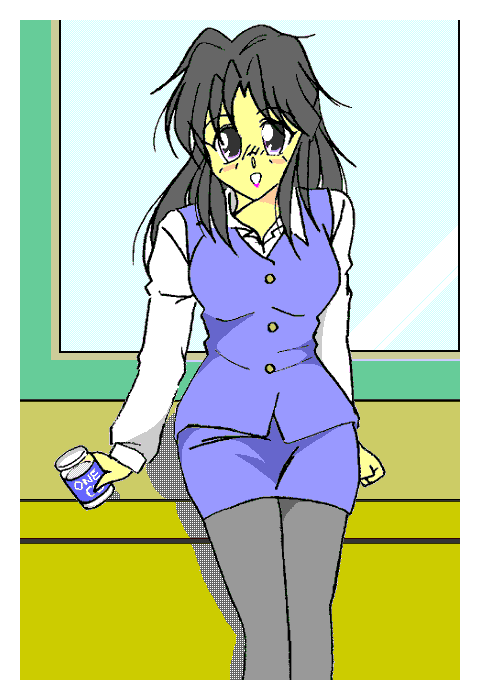

この物語の発端。
まだ侍が闊歩し、自動車もなかったころの日本のとある村。
そこにすむ五兵衛は酷い酒乱で今でいうセクハラを娘たちに続けていた。
それに対する仕打ちで酒に酔うと女になる呪いがかけられた。
その最初の時、五兵衛は酒に酔ったあげくに娘になり、自ら行きずりの侍相手に肌を重ねたことに恐怖して、以後ぷっつりと酒をやめた。
ただ生きがいをなくし、その背中がひどくさみしげに見え「セクハラ被害」の娘たちにすら同情された。
「あのう。五兵衛さんも真面目になったし、もう呪いを解いてあげてもいいんじゃ？」
さんざん今でいうセクハラを受けた娘・お静が、五兵衛の改心ぶりに許してもいいのではないかと言い出した。
「われらではどうにもならん」
呪った当人・お鶴が言う。
「そんな」
「あれではこっちが悪いことをしたようで」
「かけられた呪いは我らの苦しみを知れというもの。だからそれを知れば自然と解ける。我々にはどうしようもないのだ」
そのことで娘たちは黙り込む。
五兵衛は酒をやめただけなのでその呪いは解けなかった。
それから子孫の男はこの体質にすべて見舞われた。
あるものは酒をやめた。
あるものは男に走った。
あるものはそれでも女に対しての行為をやめなかった。
一人もどうして呪いがその身に降りかかったか理解せず、変身体質のまま生涯を終えたものばかり。
呪いをかけたものたちの魂の一部は呪いそのものとなり、一族を見守っていた。
誰かが、自分たちの怒りを理解してくれることを待ち続けていた。
それはもはや「希望」に近い思いだった。
現代。
やはり五兵衛の子孫である酒井真澄は一族に伝わる言い伝えを守り、２５歳にもかかわらず酒を飲まなかった。
だがこの職場に転勤してきたとき歓迎会でその禁を破った。
そこで改めて自分が「酒に酔うと女性化する体質」と知る。
それからというもの、ひたすら飲まないように避けていたのだが、付き合いのある社会人ともなるとなかなかそうもいかない。
しばしば飲まされてしまう。
そして女になると「五兵衛の子孫」というその血筋故か一転して淫乱な娘になり、幾人もの男の唇を強引に奪っていた。
そしてある時、女としての快感に目覚めた。
初体験まで時間はかからなかった。
そしてその大きくて深い快感におぼれた。
結果としてかたくなに拒んでいた酒を浴びるように飲みだした。
もう一つの禁忌。男相手にすることも抵抗がないどころか積極的になり、週末はいつも違う男に貫かれていた。
そのたびに女としての「悦び」で満たされる。
（もう一生このまま女でもいい）
そう思い始めてから酒量はさらに上がる。
「おはようございまぁす」
もはや当たり前のように女の姿で出社する真澄。
酔うと女性化するが、その際にＴＰＯにあった服に自動的に変わる。
今はＯＬそのものの服。
言い換えれば、朝から一杯ひっかけていた。
化粧も自動で施されるが、頬紅とは違う頬の赤みがそれを物語っていた。
「真澄ちゃん。朝帰りやね」
「きららさんもでしょ？」
本来は男であるこの二人。
いずれも前夜は酔ったあげくナンパ「され」てベッドインまでしていた。
「聞いて聞いて。きららさん。昨夜の男の子。初めてだったの」
まるでアニメ声優のような可愛らしい声で、とんでもないことを口走るが誰も気にしない。
既に恒例となっている。
さらに言うと余りにあっけらかんとして、逆に純正の男たちのほうが臆している。
（変われば変わるもんだな……）
男性陣の偽らざる声だった。
「酒井君っ」
やや裏返りかけた声で桜子が叫ぶ。
「なんですかぁ？ 桜子さぁん」
とろんとした表情。桜色の頬。明らかに酔っている。
言い伝えを守り、真相が判明したら女体化を嫌って飲まないようにしていたのに、今では毎日のように飲んでいる。
もはや「アルコール依存症」に近い。
「ここは職場よ。そんな話は後になさい」
一理ある。だから真澄も素直に「はぁーい」と了承の意を示す。
「それに酔ったまま出社なんて社会人としてどうなの？」
（あなたが言いますか？）
その場の大半が思うことだった。
桜子の女傑振りは凄まじく、二日酔いの出社どころか「迎え酒」あおって会社に来たことすらあった。
完全に自分のことを棚に上げているが、それでも見かねるほどの真澄の変貌だった。
「でもぉ、あたしぃ、仕事で飲むことを許されてますしぃ」
「うぐっ」
そうだった。
厄介な『お得意さん』の接待を押し付けられていた。しかも酒を強要してくる。
それゆえ真澄は飲むのも仕事のうちになっていた。
だからか二日酔いの出社くらいは大目に見られていた。
「そ、それに酒井君っ」
不利と見て別アプローチにかかる。
「最近ちょっと私生活が乱れてない？」
「男の人とどんなお付き合いしても恋愛は自由じゃないですかぁ」
「でもあなたは男でしょ！？」
説得力がない。真澄はどこからどう見ても女だった。
酔った直後は心も女だ。
だから前々から危うい一面はあった。
そもそも初対面から男子社員の唇を奪うほどだ。
そして今では唇どころかベッドインまでする始末。
その表情の「艶」も酒に酔っただけではない。
「男」に酔ったのは明白だった。
「酒」と『女体の快楽』の二つにおぼれ、酒井真澄は堕ちていった。
「今は女ですよぉ。それにお酒もぉ、女の子が気持ちいいのも桜子さんが教えてくれたんじゃないですかぁ」
このセリフでもう一人顔をそらす男がいた。
菊水晃一。同じ部署のと二つ上の同僚だった。
そして真澄を「オンナ」にした『初めての相手』でもある。
だが糸口は真澄の言葉通り桜子の行為だった。
真澄の特別な変身の一つに、酒量が限界を超えた場合「これ以上飲まされない姿」として子供になるというものがある。
まず小学校低学年くらいの童女。
次に中学生くらい。本人の抱くイメージの影響か、ここでは必ず反抗的な態度になる。
高校生くらいの時は一転しておっとりとした印象に。
ある飲み会で童女にまでしてしまった真澄を、つぶした手前で桜子が面倒見ることになった。
落ち着いたところで童女の真澄を入浴させていたら、そこで中学生バージョンに。
その反抗的な態度。
そしてともに裸身だったことから、その状況ならではの『お仕置き』をしたら『女の快感』に目覚めてしまった。
そう。疑似的ではあるが「思春期」に『性癖』を変えられた形だ。
つまり現在の真澄がここまで突き抜けた遠因は桜子にもある。
だから彼女は責任を感じていた。
何とかリセットしようと思っていた。
（らちが明かないわね……）
いらだつ桜子。正攻法がだめなら搦め手。別アプローチを試みる。
「そう。それじゃいいわ。そんなにお酒が好きになったというならちょうど金曜だし、酒井君。今夜飲みに行くわよっ」
「きゃーっ。嬉しいーっ」
今ではこの反応の真澄である。
元々女性化すると愛想のいい方だったが、ここ最近は「充実」しているゆえかことさら明るい。
「どうするつもりだよ」
業務再開したオフィス。仕事の傍ら菊水が桜子に歩み寄り小声で尋ねる。
「再教育するわ。また泥酔させて子供にするのよ。その素直なところに教え込むわ」
理にはかなっている。しかし
「そううまくいくかなぁ？」
「ダメなら酒井君は見境なしのビッチよ。あなたたちも協力して」
「協力って？」
「やり直し」という意味なのか。それとも単に夏場故か「作戦」はビアガーデンで行われた。
「おー。酒井。いい呑みっぷりだなぁ」
「えへへへへ。暑いからビールがおいしいですぅ」
「酒井。それ。こっちも飲め」
「あっ。はぁい」
協力とは難しい事ではない。
男子社員が寄ってたかって真澄にビールを勧めるだけだ。
しかしこの単純な手が意外に有効。
なにしろ今の真澄は「淫乱」「ウワバミ」なのである。
男に勧められた酒を断ったりしない。
勧められるままにかなりの量を飲んでいた。
ところがいつまで経っても真澄は童女化しない。
だいぶ顔が赤くなり、頻繁にトイレにも出向いているから酔ってないわけではない。
（なんで？ これだけ飲んだらもう飲みたくなんてなくなって、自衛のために飲まされない姿である子供になるはずなのに？）
もくろみの外れた桜子は内心焦る。
「おい。酒井。大丈夫か？」
酔い潰す筈の越野が逆に心配になるほど「へべれけ」だった。
「らーいじょーぶれーす。お酒がおいしくて、もっとのみたいれす」
そのセリフで判明した。
確かに限度は超えている。
だが「飲みたくない」わけではない。
だから自衛としての「童女化」が発動しない。
（子供にならないんじゃ……）
歯噛みする桜子。
それでも一縷の望みを託してまだ飲み続ける。
大半が帰った後もきららと三人で繁華街をうろつく。
しかし「単なる二日酔い」になっただけで、とうとう二段変身はしなかった。
それどころか……
月曜日。
新しい一週間が始まる。
「あー。昨日は結局ずっと寝てましたよ」
「オレも……飲めなくなったよなぁ」
口々にダメージを語る男子社員たち。
真澄に飲ませる付き合いで飲んでいたため、彼らも二日酔いになったのだ。
「わたしたちはあんまり飲んでないから」
「平気ですけど」
同僚女子の澤野いずみと宇良かすみは、同行はしたものの彼らほどは飲まず。
盛り上げに徹していたので、ここまで悲惨な目にはあっていない。
「ところで肝心の酒井君はどうしたのかな？」
はしごまで付き合ってかなり飲んだはずのきららが、ちゃんと男の姿でこの場にいた。
「山崎……お前、本当に強いな」
竹葉が感心半分。呆れ半分でいう。その時だ。
かすみのデスクの電話が鳴る。
「お電話ありがとうござい……酒井さん？」
この時点で察しがついた一同。
「それじゃ課長に電話まわしますね」
アイコンタクトで内線をつなげたことを伝えた。
「もしもし。私だが――ああ。わかった。こっちのことは気にしなくていいから。ゆっくり休め。それじゃな」
電話を切る。一同が注目していた。
「酒井だが体調不良で休むそうだ」
途端に爆笑が起きる。
「やっぱりなぁ」
「あれだけのんでりゃ調子悪くもなるわ」
「あげくの果てに突発かよ」
いない人間は言いたい放題に言われるものだ。
「でも……酒井さんの声……女性の物でした」
かすみの言葉でぴたりと声がやむ。
ある「恐ろしい考え」が脳裏をよぎる一同。それを振り払うかのように
「迎え酒だろ。それで酔って女になってるんじゃね―の？」
強引に納得させていた。
それですまないのが桜子である。顔面蒼白だ。落ち着きがない。
「吉野君。すまないが酒井の様子を見てきてくれないか？」
上司から公に「見てこい」と言われた彼女は、文字通り飛び出していった。
酒井の住むマンションに出向いた桜子は、初めは普通にインターホンで来訪を告げた。
しかし反応がない。
そこで電話をした。これも反応がない。
それでもあきらめずメールをした。
これでだめなら管理人に「中で人が倒れているかもしれない」と言って、合鍵で開けさせるつもりであったが扉があいた。
「酒井く……」
女の姿だった。
しかし着ているものは男物のパジャマ。
そしてひどい顔だった。
クマができ、顔色も悪く、生気がない。
違和感を感じると思ったらノーメイクだった。
変身すると自動的に化粧されるはずなのに……つまりこれは変身直後ではない。
「まさか？」
ずっと感じていた嫌な予感がさらに強くなる。
「……上がってください」
抑揚のないかすれた声で真澄は桜子を招き入れる。
部屋で二人きりになって、互いに座った直後だ。
真澄が大粒の涙を流し始めて桜子は驚いた。
「吉野さん……あたし、戻れなくなっちゃいました」
それを告げると真澄は大声で泣き始めた。
桜子の抱く「嫌な予感は」最悪の形で的中した。
「泣く」という行為は感情を整理するためのものだ。
だから桜子は真澄が泣き止むまで優しく抱きしめていた。
それがよかったのか、意外に早く話のできる状態になる。
「金曜の夜の飲み会の後、土曜は一日寝ていて、それで何とか回復したはずだったんです。頭痛も胃のむかつきも消えていたし。さすがに日曜はお酒を飲む気になれなくて一日ひきこもってました」
酒に酔うと衣類も自動的に女性服に変わる真澄は、わざわざ女性服を調達まではしていない。
だから女の姿では外に出るための服がほしかったら酒を飲むしかないが、とても口にする気になれなくて回復に徹していた。
「それだけ時間が経っても、今朝になっても男に戻れなくて、あたしもうどうしたらいいのかわからなくなって」
「一体なんで？ 今まであなたの一族にこんなケースはなかったんでしょう？」
桜子はそれを口にした瞬間に「仮説」にたどり着く。
（そういえば子供の姿になるのも酒井君だけらしいわね……彼は特別なのかも？ だから女として行為を繰り返すうちに『のろい』がこういう形でさらに強くなった？ だとしたら）
「はい。他にはこんな……吉野さん？」
泣いて感情を爆発させた真澄は比較的冷静に。
それと入れ替わるように桜子の華奢な肩が震える。そして今度は彼女が涙を落とす。
「……あたしのせいだ。あたしが酒井君に変なことを教えたからこんなことに……」
自責の念から号泣する。
逆に真澄がなだめることに。
それがさらに真澄の心を整理させた。
「まだ大した時間じゃないから結論を出すには早いかもです。もしかしたら男に戻れるかもだし。それに」
「それに？」
「たとえ戻れなくてもいいかもしれません。同じ人間だし。その……女もそんなに悪くないし。今までだって半々だったのが、今度は女で固定されただけの話ですし」
「それでいいの？ ねえ。ホントにそれでいいの？」
さらに涙をこぼす桜子。真澄にすがりつき号泣する。優しい表情でそれを抱きしめる真澄。
「仕方ないんです。あたしが自分から招いたことなんですから」
『戻れない』という驚きからパニックに陥った真澄だが、その事実を受け入れたら「覚悟」が決まった。
それでも一応は試す。
一度会社に戻って報告し、一日の仕事を終えた桜子は真澄に何着かの女性服を貸しに来た。
通勤用のそれと、日常生活のそれだ。
さすがに下着だけは自前で調達したが、あくまで仮のもので安物だ。
それは禁酒して出勤するためだ。肉体が女性なので通勤用の衣類がいる。
やはり最低限の化粧品を、それもすぐになくなりそうなものだけもらって化粧していた。
まだ元に戻れる希望を抱いていた。
しかし禁酒して一週間通したが真澄は男に戻れなかった。
ここでもう彼女は諦めた。
くしくも『戻れるかもしれないから最低限の化粧品』のはずが「もうあきらめて変身を再開させるから不要」と正反対の結果に。

お盆休みを経て秋になる。
七月に女で固定された真澄は未だに戻れなかった。
それどころかすでに二度も「女の子の日」を迎えていた。
このころには観念して自前の女性服や化粧品もそろえていた。
変身すれば女性服に変換されることもあり、男性服の処分はしてないものの、素面の時にいるからだ。
すっかり女性としての日常が当たり前になり、業務のほうも次第に女子社員扱いへと移っていた。
それと同時に女性が基本となったことで、今まで感じなかった「女性ならではのデメリット」を感じ始めた。
そうでなくてもさんざん同じ会社の男性社員と肌を重ねていた。
つまり「いつでもやらせてくれる」などと安く見られていた。
これがいたくプライドを傷つける。
あくまで『自分が気持ちよくなるために相手をしてもらった」だけで、欲望のはけ口としてみなされるのは『女のプライド』が許さなかった。
だから逆にこのころはほとんど男と寝ていない。
女として固定されたせいか男のあらが――平たく言うと「バカさ加減」が見えてきた。
「まったくもう。なんだって男どもは、ああもじろじろ人の胸元見るのかしら？」
現在はお昼休み。弁当を食べながらしゃべっている。
「変身」していた時は基本的に酔っ払い。
二段変身の中学生女子バージョンを除けば常に上機嫌だったが「固定」されてからは他の表情も見せるようになった。
「仕方ないわよ。それだけ立派な胸してたら」
桜子とも完全に女友達になってしまっていた。
それもあり以前より距離が縮まっていた。男女間ではなく『女同士』で。
「そりゃあたしはずっと男をとっかえひっかえしていたから安くみられるのも仕方ないけど……なんか気分悪いのよね」
「素面」たとさすがに淫乱な面が引っ込み、むしろ抑えがちになる。
これは男時代からのまじめさが反映されている。
「はぁーあ。今更男に夢なんて持てないしなぁ。ずっと独身かしら？」
「独身って……そういえば酒井さんの戸籍って」
澤野いずみが好奇心で尋ねる。
「うん。ちょっと必要で調べていたら女になってた」
「ええ！？」
驚く一同。まさかそんなところまで？
「ああ。どうやらそのあたりまで自動的に変化するらしい。僕もちょっと好奇心で戸籍見たら、ちゃんと男の時と女の時で性別が切り替わっていた」
同じ体質の山崎が言うならそうなのだろう。
「……まぁ呪いなんていうオカルトじゃ、そんな不思議もありかもだがなぁ」
「だからあたしは入籍するなら男相手ってことになるの」
ため息をつく真澄。
『女の快楽』におぼれていろんな男と行為をしたためか、むしろ男の悪い面が見えてきて最初の発言である。
そしてまさしくターニングポイントとなる事件が発生した。
「た、大変だっ。抜き打ちでご隠居がっ」
鳥山専務が大慌てで駆け込んできた。
相談役ということではあるが、いまだ実権を握る節原老人が唐突に来訪した。
得意先のそれだけに無下に扱えない。
だからここの女子社員が接待していた。
鳥山がそれを言外に要求しているのは明白だった。
そしてこの老人。かなりの好色で女子の体に触れたり、勤務中に酒を飲ませたりするので女子を中心に嫌われていた。
思えばこの接待役を真澄が受けたのがきっかけで、会社に酒が置かれるようになり、そして真澄が女性として出入りするのも容易になっていた。
「酒井。いつものように頼んでいいか？」
「あ。はい」
以前のように女子としての姿が仮の物ではなく、完全に女性化したからか念を押してくる二村課長。
念を押された戸惑いもあるが、確かに今となっては以前ほど「何も考えず」に相手できなくなった真澄は、返事をためらったが了承した。
「ひょほほほほ。久しぶりじゃのう」
まさに枯れ木のような老人が、我が物顔でこの社内を闊歩している。
「また来てくださって嬉しいですわ」
「営業スマイル」の真澄。
以前は酔っぱらっていたのもあり、何も考えず接待して、それが結果的に好印象につながっていた。
しかし間が空いた期間に真澄は男性経験を重ねた挙句、男に戻れない本物の女になってしまった。
「肌」を通じて「男」を知り、そして自分の『女』を知った。
もう以前のようには対応できない。
「なんじゃ？ 何か感じが違うのう？ 何かあったか？」
伊達に年齢を重ねてない。違和感を感じ取った。
「いいえ。なんてもありませんわ。さぁ。こちらへ」
素面のせいかこの図々しい老人に嫌悪感を感じるが、それを笑顔という仮面で隠して別室へと案内する。
しかしやはり「経験」は人を変える。
この節原。男としての悪い面があまりに目立つ。
いまだ相談役なところを見る限り、それなりにまだ必要とされる人間かもしれないが、それはあくまで彼の会社での話。
ここではただの厄介者だ。
それが真澄にも見えるようになっていた。
童女のころは兄になついていた妹が、中学いくらいになるとむしろ仲が悪くなるあの感じ。
真澄はそういう具合に女としてステップアップしていた。
それでも「大人の女」として態度に出さないようにしていた。
しかし我慢すればするほどいやなところが目につく。
（ああ。また胸ばかり見て。欲情しているのかしら？）
元々は男だった真澄である。
女の胸元に目が行くのは理解できるはずだったが、いざ自分が「そういう目」で見られるとなると不快感を覚える。
二度と男に戻れない……男の立場にならない。完全に女性の立場という思いも、その不快感につながっていた。
視線でこれだ。接触などされようものなら怖気すら感じる。
それに気が付かないのか。あるいは逆に「我慢している様子」を楽しむサディスティックな心情か。
節原は無遠慮にストッキング越しの太ももをなでまわす。
「い、いやですわ。おじい様」
それでも笑顔は忘れない。ただし引きつり気味だが。
その様子を例によってみていた桜子たち。
元々は節原が暴走した時に備えての監視だったが、真澄の様子にハラハラしながら見ていた。
「酒井さん……可哀想」
「あんな風にされたらたまんないわ」
「あたしだったらそろそろ殴ってるわね」
ぼん。爆発音。
「え？ 殴ったんですか？」
かすみの天然気味の質問。
「あ、あたしじゃないわよ。今の音は」
振り返るとオフィスににおよそ似つかわしくない「水商売風」の女がいた。
山崎が女に変身したのだ。その理由は？
「よっしゃ。ウチがそろそろ助けに入るっちゃ」
こちらはすでに「女として安定している」きららである。
あしらいも慣れている。
助けに入るべく一杯あおっていた。
「山崎さん。早く。急いで」
「このままじゃ酒井さんが」
「あ、あのジジイ」
節原はなんとキスを迫っていた。
さすがにこれは限度をはるかに超えている。
当然、当事者としたらたまらない。
（この爺さん。キスまで……そりゃあたしだって最初の変身の時に男子社員の奪いまくったし、夏にはベッドインすらしていたけど……なんかいやだ。爺さんだからじゃなくて別の理由）
ためらっていた。そこまでできないと。
それが節原の癇に障った。
「なんじゃ。愛想のない。ほれ。一杯やれ。その勢いでもちっとサービスせいや」
日本酒をコップ一杯になみなみと注いで真澄に差し出す。
その上から目線でついに真澄も限界を突破した。
立ち上がると、節原の頭からその日本酒を浴びせた。
（酒井っ！？）
見守っていた面々も凍てつく空気。
いくら今は「相談役」でも事実上「お得意様」のトップにこの「狼藉」
青くなるのも当然。
「わひゃあっ。なっ、何をするかっ！？」
あたりまえだが抗議する老人。
それに対して怒りの表情を隠さない真澄。
「何をするかですって？ それはこっちのセリフよっ」
完全に真澄が切れた。男の時でもここまではなったことがない。
きららも乱入しそびれたその気迫。不思議と凛として美しさを感じさせた真澄である。
「立場振りかざして抵抗できない相手に好き放題。女をなんだと思ってるの？」
ガラスのコップを床にたたきつける。木端微塵に砕け散ったコップが、まるで真澄の怒りの爆発を具現化させたようだ。
「あたしはあんたにご奉仕するために女になったわけじゃなぁーいっ。女をなめるなぁーっ」
「完全な女」になったからこそ出た「魂の叫び」だった。
（よくぞ言った）
「ン？」
全くなじみのない女の声がする。
互いに顔を見合わせる女子社員たち。
切れていた真澄もきららの顔を見るが当人は「ウチじゃない」とばかしに手を振っていた。
「それじゃ誰の……ううっ」
真澄が突如としてうずくまった。
「酒井っ！？」
異変にたまらず全員突入。
その眼前で真澄が男へと戻っていく。
「な、なんじゃ？ 何が起こっている？」
変身体質を知らない節原が当然ながら最も驚いている。
「こ、これは一体？」
またきららに視線が集まるが、彼女も知らない。
そうこうしているうちに真澄は完全に男へと戻った。
「戻った……のか？ でもどうして？ 完全に女に固定されたはずなのに」
（それはお主が我らの怒りをわかってくれたからじゃ）
再び謎の女声。
そして酒井から何か「オーラ」のようなものが漂い、中空で幾人かの女の姿になる。
「あんたたちは一体？」
「幽霊」で腰を抜かしている一同だが、酒井は一心同体。それも生まれた時からのだったせいか平然としている。きららもある程度は理解している。
（われらはおぬしの先祖にかけられた呪い。呪った娘たちの念がこの形でお前に見えている）
「つまり……俺の呪いは解けたということか？」
（そうじゃ。元々はおぬしの先祖を諌めるためのもの。しかしきゃつは酒こそやめたが我らの怒りまでは理解せなんだ）
なるほど。酒井の話通りだと少し冷静さを取り戻した一同は理解した。
節原は失神寸前である。
（しかしお主は、童の姿にまでなってより深く女を理解した。一時は快楽におぼれ、それを諌めるためにより強い呪いになり本当に女になったが、それゆえわれらの怒りをわかってくれた。だからこの呪いは解けた）
「本当なのか？」
「物は試しよ。酒井君。これ」
真澄が砕いてしまったので新しいコップを用意して、そこに注いだ日本酒を桜子は差し出す。
「よ、よし」
ちびちびと少しずつ飲んでいく。
しかししばらくしても変身しない。
「解けたんだ……もう女にはならないんだ」
歓喜。そして本人にも意外なことに一抹の寂しさがあった。
女としての姿も自分自身には違わず。それとの永劫の別れと思うと寂しさもあった。
「う、ウチは全然女の怒りなんて理解してないっちゃよ。だから呪いは解けないんよね？」
どう見ても「解けてほしくない」という態度のきららである。
完全に二つの性別で人生を楽しんでいる。
（解けたのは女の怒りを身をもって理解したこの者だけじゃ）
「よかったぁー」
心から安堵している表情のきらら。さすがにみんなあきれていた。
（その怒りの気持ち、ゆめゆめ忘れるでないぞ。さらばじゃ）
こうして酒井真澄に先祖の代からかかっていた呪いは解けた。
「夢じゃ……ないのか？」
「よかったわね。酒井君」
完全な女にしてしまった自責の念から解放されたのと、単純に酒井が男に戻ったので心からの笑顔の桜子。
「酒井っ！」「酒井さんっ」
みんなが口々に祝福してくれる。
「ありがとう。俺、男に戻れて本当に良かった」
「うーん。でも、ちょっとだけ早かったかも」
「え？」
「あんなことがあったのでは自分の身なりに気が付かないのも無理はないけど、何を着ているかよく見たら」
「え？ ええっ？」
下を見る。視界を遮っていた巨乳が消失したので「スカート」がよく見えた。
そしてブラウスの上からベストとＯＬの制服だったのを思い出した。
つまり女装状態だった。
「わわっ」
あわてて隠すが隠しきれず。
酒井が戻れた安堵もあり笑いが起きる。
「夢じゃ。これは夢じゃ」
白昼堂々展開されたオカルトに節原はトラウマに近いものを受けた。
あげく「酒とセクハラでこんな怖い思いをした」と考えが至り、以後は酒も女遊びもぷっつりとやめた。
ただの枯れた老人になってしまった。
山崎きららの呪いは解けず、本人もそれを望んでいた。
ただあまり女よりになると酒井同様に完全に女性化。
それは別にかまわなかったが、そこから呪いが解けてしまうのを危惧して肉体関係には安易にいかなくなった。
その分、精神面を重視して、むしろ女性的に変化した。
そして酒井真澄と吉野桜子は……
呪いが解けた夜。
二人だけで酒井のマンションで祝杯を挙げていた。
「いくら飲んでも女にならない。ああ。本当に俺は呪いから解き放たれたんだなぁ」
やや怪しい呂律で話す酒井。酔っている。
「もう。酒井君たらぁ。その話、何度目よ？」
名の通り桜色の頬の桜子。こちらも酔っている。
これには本当に呪いが解けたかの確認もあった。
だから万が一解けてなくて変身してしまっても、騒ぎにならないように店ではなく酒井のマンションで飲んでいた。
「でも本当に良かったわ。あのまま一生女だったらあたし謝りきれなくて」
「こうして男に戻れたんだからいいじゃないか。それに女として過ごした日々も今となっては悪くない」
「男と寝たのも？」
酒のせいか意地の悪い質問が出た。
「そ、それにしたって女はどう感じるのか？ そしてどうすれば気持ちいいのか理解できたんだ。今までより女性を理解できたはずだ」
「ふうん」
とろんとした目で桜子は言う。
「それなら試してみる？」
ちらっとスカートを捲し上げて太ももをより多く見せる。
酒井はごくりと生唾を飲み込んだ。
「いいのか？ 俺は身をもって女の快感を知ったんだ。昇天するぜ」
「させてさせて。昇天させて」
両者ともに「酔った勢い」だった。
手を取り合ってベッドルームへと。
そのまま最後まで行った結果――
一月。
酒井真澄と吉野桜子の挙式が行われた。
同僚たちも全員出席して祝福した。
晴れの席だというのに、酒井の笑顔はぎこちなかった。
二次会。質問攻めの新郎新婦。
焦点はこうなったいきさつ。そして緊急というレベルでの早い挙式の理由。
もっとも全員察しがついていた。そしてそれは正解だった。
「いやぁ。酒井くん……じゃなくて旦那の呪いが解けた夜に、祝杯あげていたらついその気になっちゃって」
桜子は妊娠していた。結婚にそれで踏み切った。
そしてお腹が目立つ前にと挙式をしてしまったのである。
「酔った勢いででき婚とはなぁ」
「男らしく責任とれよな」
「特にお前は女でもあったんだし、気持ちはわかるだろ」
同僚男子に言われ放題である。
「酒井さん。吉野さんを……じゃなくて奥さんを大事にしないとダメですよ」
「女の人の気持ちもわかるはずですよね」
かすみといずみ。女子二名も桜子の味方である。
いずみのほうは女の真澄と妖しい関係になっていたが、その相手が封じられたので気持ちの整理もついた。
「あっははは。真澄ちゃん。また呪われたらウチと二人で楽しもうやん」
酒が出るのは分かっていたので、最初から女性としての姿で列席していたきらら。
完全に出来上がっている。
「酒井。女としての経験もしたんだ。普通の男では考えられない経験を積んだことで、さらに成長できたはずだ。それを結婚生活に生かすのだ」
さすがに二村忠也課長はまじめに言う。
もう好き勝手に言われていた酒井。
さすがに限度が来た。
「桜子さんと結婚したのに不服はいないが、こんな形でなくてちゃんとしたかった。酔った勢いなんてかっこ悪い。これもすべて酒のせいか？ だったら俺……」
そして酒井は叫ぶ。
「俺、もう酒やめたーっ」
きっと無理だろうな。その場の全員が思っていた。
そう。酒井自身も。
酒とはそういう「魔力」を持つ。
宴は酒の力も手伝い、和気あいあいと進んでいた。
おしまい
あとがき
長らくお楽しみいただいた「とらぶる☆すぴりっつ」。これにて完結です。
可逆型ＴＳで女の子になった時に調子に乗っていろいろやらかして、後で恥ずかしい思いをするのと、酒に酔っていろいろやらかして後で青くなるのは似ているなと思ったところから始まったこのシリーズ。
最後は「依存症」というヘビーな形になりましたが、無事に男に戻れました。
元々一話目だけのつもりだったので桜子とくっつけるのは序盤では意識してなくて。
そちらに結びつけたのは五話目あたりからですね。
同時にこのラストもそのあたりで。
呪いが解けるのは考えてましたけど、悩んだのはすべて解けるかどうかと。
結局は主人公だけにしましたけど。
やっていることが似ているから「着せ替え少年」の姉妹編として、あちらかライダーパロなのでこちらはウルトラパロと思ったら意外にもネタが出てこなくて。
途中で消えちゃいました。
お酒を楽しまれる方々にこの作品をささげます。乾杯。
お読みいただきまして、ありがとうございました。
城弾
□ 感想はこちらに □